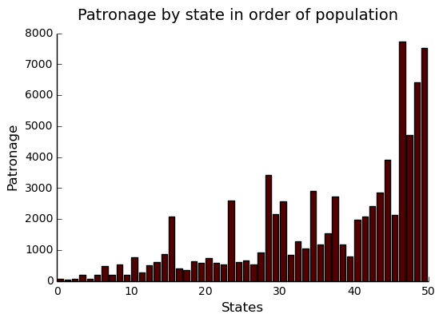
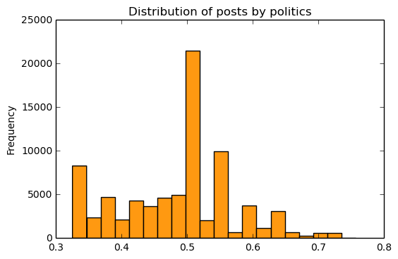
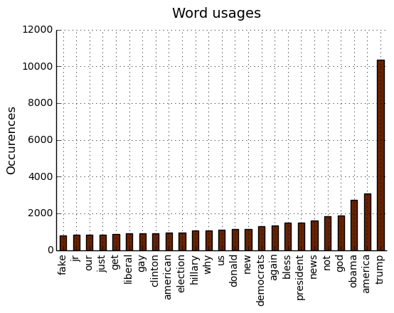
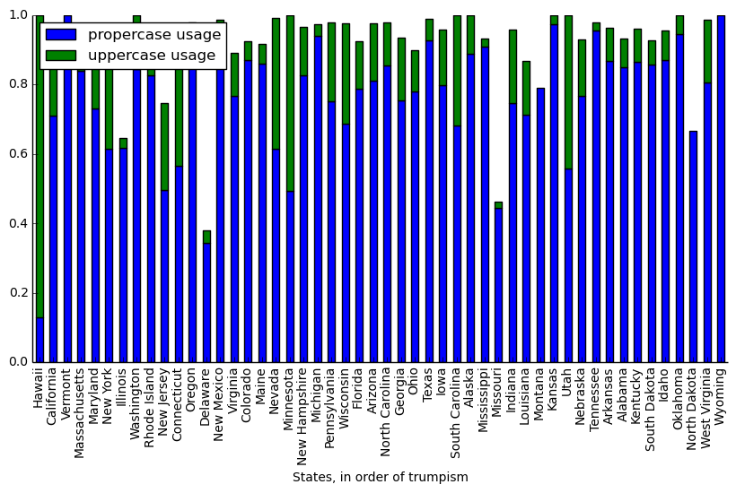
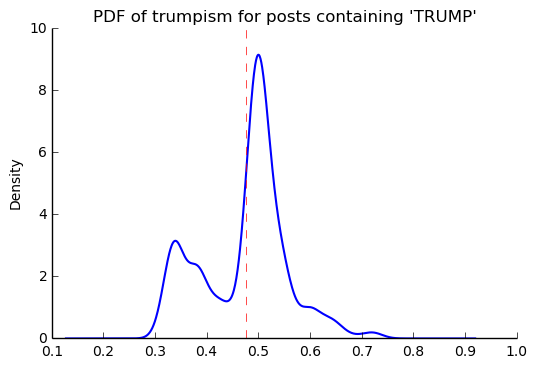

Scraping the Bottom of the Barrel
Table of Contents
Introduction
For my web scraping project, I've chosen to extract some of the political data from craigslist.org. My original ambition, though it proved difficult to affirm, was to show a small, non-existant, or negative correllation of pro-Trump chatter to expected conservatism. I suspected that in the politics section of Craigslist, more conservative states would be disproportionately less likely sources of pro-Trump posts.
My basis for this suspicion was my general observation that less regulated areas for discussion on the Internet tend to be very attractive to those members of a socially disparaged minority. Recognizing that Trump supporters in largely pro-Clinton geographic areas are disparaged for their support in amounts disproportionate to their high representation, it followed that I could expect some amount of pro-Trump (mostly trollish) chatter in mostly liberal places (e.g., New York City). The positive sentiment proved to be difficult to convincingly affirm.
More generally, I sought to analyze the trends of discussion on Craiglist, mostly in areas of text usage (capitalization, word frequency, etc.) vs political leaning.

Methodology
To extract data from Craigslist, I used the Python scrapy package, which was
probably overkill. Originally, I intended to collect post-bodies as well as the
post-titles, however this would require about 100 times as many request, too many for
me to reponsibly execute in a reasonable amount of time. Therefore, I limited
the extraction to titles, which involved about 500 requests, spread over five hours,
to obtain roughly 40,000 post titles/times.
For each of these titles, there is a corresponding state and region, with some
regions additionally divided into subregions (the New York City region, for
example, consists of Brooklyn, Queens, Manhattan, etc). Each post, its time
and its geographical origin, are represented with a single row in a 40k row
Pandas DataFrame (DF), usa.
Data corruption was not an issue, as the CL layout is quite uniform, though I did need to take into account data redundancy (e.g., occasionally "regions" are also "subregions" of sibling regions), and was able to handle this by ensuring links were travelled to only once. To make use of the extracted post title data, I employed the 2010 U.S. census, which is available from http://www.census.gov, as well as the 2016 election results data, which I scraped from http://uselectionatlas.org/ using a BeautifulSoup extraction script.
Preparing data
The craigslist extractor, written as a scrapy program, collected titles and dates, as well as the corresponding geographical designations. To keep it simple, these are all stored together as rows in a csv file.
Reading this data from craigcrawler's file:
80,222 total posts exctracted from 416 regions over 52 states. The most frequented state was 'Florida', and the most frequented region was, surprisingly, 'south florida'.
usa Sample
A sample of posts in the usa DataFrame before pre-processing, which is the DF for
storing all CL politics posts:
| title | date | state | region | subregion | |
|---|---|---|---|---|---|
| 535 | Trump | 2016-12-22 23:06 | Delaware | delaware | nan |
| 37362 | Rubio Was Right | 2016-12-20 22:06 | Texas | dallas / fort worth | north DFW |
| 65107 | LOST DOG - reward!*** | 2017-01-23 23:12 | Kentucky | lexington, KY | nan |
U.S. Census 2010
Census Data
Census data is collected from U.S. Census Bureau for 2010 census. This will be used mostly to guage the CL usage of individual states, which can then be compared against political orientation, etc. Here's a sample:
| state | population |
|---|---|
| Arizona | 6.39202e+06 |
| Wyoming | 563626 |
| West Virginia | 1.85299e+06 |
| Texas | 2.51456e+07 |
U.S. 2016 Election
The 2016 Election results will be useful for comparing expected political orientation to CL usage trends. They are grabbed from a really nice site, uselectionsatlas.org using the following script:
import requests from scrapy import Selector atlas_url = ("http://uselectionatlas.org/RESULTS/data.php?year" + "=2016&datatype=national&def=1&f=1&off=0&elect=0") atlas_source = requests.get(atlas_url).text select = Selector(text=atlas_source).xpath('//*[@id="datatable"]/tbody/tr') convert = lambda s: int(s.replace(',', '')) vote_names = map(str, select.xpath('td[3]/a/text()').extract()) # Correct name for DC vote_names[8] = "District of Columbia" clinton_votes = map(convert, select.xpath('td[17]/text()').extract()) trump_votes = map(convert, select.xpath('td[18]/text()').extract()) gen_votes = pd.DataFrame({"clinton": clinton_votes, "trump": trump_votes}, index=vote_names) # Dub a states Rebublican vote rate "trumpism" trump_favor = pd.DataFrame(gen_votes["trump"]/gen_votes.sum(axis=1), columns=["trumpism"], index=vote_names) voting = gen_votes.join(trump_favor).sort_values("trumpism", ascending=False) voting = voting.drop("District of Columbia")
Sample of voting DataFrame:
| clinton | trump | trumpism | |
|---|---|---|---|
| Wyoming | 55973 | 174419 | 0.757 |
| West Virginia | 188794 | 489371 | 0.722 |
| North Dakota | 93758 | 216794 | 0.698 |
| SPACE | ------ | ------ | ------ |
| Hawaii | 266891 | 128847 | 0.326 |
| California | 8753788 | 4483810 | 0.339 |
| Vermont | 178573 | 95369 | 0.348 |
Preprocess Data
A small bit of preprocessing to check data for corruption and unexpected results was necessary. There was no missing data, and no corruption. I suspected that I might encounter some amount of redundancy, but the extractor was written to exclude duplicated links, and it happened to be the case that CL keys areas uniquely across highly related (sub)regions. For example, the "long island" region and "long island, NY" subregion (subregion of "new york city" region) seem like they might be the same, but are actually completely distinct.
# Drop empty regions. Some regions are too small to have any posts. usa = usa_raw.dropna(subset=["title", "date"], how="any", axis=0) assert len(postless_regions) == len(usa_raw)-len(usa) # Get rid of territories (Guam, Puerto Rico). usa = usa[usa["state"] != "Territories"] # Get rid of "District of Columbia" usa = usa[usa["state"] != "District of Columbia"]
State Usage
Although the post data has attached a fairly fine-grain geographical description, I found the CL regions in general to not line up well with any census bureau categories. Moreover, even in the lucky event of such name correspondence, the division of regions was at least questionable. For example, by far the dataset's most prominent "state" outliers, District of Columbia, has a census population of about 600k, yet a practical metropolitan area population in the several millions, a disparity that grossly skews its contributions to state-wide political statistics. For this reason, regions and subregions were largely found to be unmanageably tedious to consider seriously in any analysis. States, however, having relatively little variation between practical occupancy and census population, and having indisputable borders, barring District of Columbia, are ideal for inspection.
Terms
- Patronage Patronage is the raw number of posts on a politics board.
- Usage Usage is my measure for a states proportional interest in the politics board. It is simply the normalized ratio of patronage and state population.
- Trumpism
Trumpism is the name for a state's Republican vote percentage in the
General Election. It is used as a rough measure of how pro-Trump
a given stat is, and is a column in the
votingDataFrame, which is comprised of scraped data on the 2016 General Election results.
The state_usage table is the census table concatenated with patronage usage.
states Sample
Joining state_usage with voting gives us a decent top-down view of state
political tendencies on CL:
states = state_usage.join(voting, how="left").sort_values("usage")
| state | patronage | population | usage | clinton | trump | trumpism |
|---|---|---|---|---|---|---|
| South Dakota | 71 | 814180 | 0.0462247 | 117458 | 227721 | 0.659719 |
| New Jersey | 800 | 8.79189e+06 | 0.0515528 | 2.14828e+06 | 1.60193e+06 | 0.427158 |
| Arizona | 2909 | 6.39202e+06 | 0.563611 | 1.16117e+06 | 1.2524e+06 | 0.5189 |
Outliers
There are two major outlying states in the dataset: Colorodo and District of Columbia.
Colorado
We can see from the following that Colorado is an extreme outlier, being the fifth most popular state, yet the 23rd most populous.

With the normalized population/patronage ratio depicted above, we derive the usage metric, for which the median is 0.203, and for which the state with the next highest popularity, Hawaii, is rated 0.816.
Usage in the Denver region is also especially large. Despite having a population of 650,000 people (and a metropolitcan area of three million), Denver sees a large patronage:
Patronage of Denver, Colorado: 1988
For the reasons mentioned before, deriving state usage measurements for regions and subregions is too difficult to bother with. However, we can get a feeling for this anomoly by comparing it to another region, "new york city". The "new york city" region, which is expansive enough as to include metropolitan areas like "new jersey", "long island", "fairfield", etc, has significantly fewer posts for the week of data extracted, at 1006 posts:
# From census bureau, to the nearest 1000 people pop_denver_proper = 649000.0 pop_denver_metro = 2814000.0 pop_nyc_proper = 8550000.0 pop_nyc_metro = 20200000.0 # Enumerate the NYC subregions. More than you might think. nyc_subregions = usa.groupby("region").get_group( "new york city").subregion.unique().tolist() num_nyc_posts = len(usa[usa.region == "new york city"]) num_denver_posts = len(usa[usa.region == "denver, CO"]) den_nyc_rat_prop = (num_denver_posts/pop_denver_proper) / \ (num_nyc_posts/pop_nyc_proper) den_nyc_rat_metro = (num_denver_posts/pop_denver_metro)/ \ (num_nyc_posts/pop_nyc_metro)
2016 posts in NYC spread over: manhattan, brooklyn, queens, bronx, staten island, new jersey, long island, westchester, and fairfield. Considering city propers, we can say that Denver has ~13.0x the usage rate of New York City. Adjusting for census estimates for metropolitan areas, it would seem that Denver's usage is ~7.1x that of NYC's.
This is a remarkably popular region, clearly. I suspect that this extreme usage rate has to do with the state granularity CL assigned to the state of Colorado. They might want to consider providing more regions. However, we also see that the usage of the Denver metropolitan area is proportionally less extreme compared to NYC's metropolitan area usage, which might cast some doubt on how much Denver needs more division among it's subregions. Suffice it to say, Denver is wildly popular for CL politics.
District of Columbia
While I found Colorado to be an inexplicable anamoly, it was also justifiably accurate. District of Columbia, having an incredibly low Republican voting rate of ~4%, and the usage similar to Colorado's, coupled with it's unclear geographic distinction and population, meant its results were too extreme and variable to consider in analysis. Besides, it's not even a real state…
Patronage

We can get a feel for the usage distribution by taking a look at the
following sample from the state_usage table:
| patronage | population | usage | |
|---|---|---|---|
| Nevada | 2067 | 2700551 | 1.0 |
| Colorado | 3425 | 5029196 | 0.881 |
| Oregon | 2590 | 3831074 | 0.874 |
| Hawaii | 756 | 1360301 | 0.705 |
| Montana | 470 | 989415 | 0.592 |
| SPACE | ------ | ------ | ------ |
| Vermont | 34 | 625741 | 0.0 |
| South Dakota | 71 | 814180 | 0.046 |
| North Dakota | 60 | 672591 | 0.049 |
| New Jersey | 800 | 8791894 | 0.052 |
| Wyoming | 52 | 563626 | 0.053 |
Seemingly some correlation between low population and low usage is evident. However, the states for which the politics board is most popular are also fairly small. It may be that the popularity doesn't relate to state size, directly, but to political orientation, which itself correlates with state population (states are smaller in Middle America). I suspect that political discussion is most charged currently in Democratic states, where discenting opinion is that which is held by the triumphant party. It may also be that the board popularity relationship to patronage is non-linear. This correlation is explored more by some political investigation.
Usage

These are the PDF estimations for normalized patronage, population, usage. They are estimations, so they extend beyond 0 and 1 on the graph. Usage distribution is the ratio distribution of patronage and population.
# Plot normalized state usage measures state_usage_min_zero = state_usage - state_usage.min() state_usage_range = state_usage.max() - state_usage.min() norm_usage = state_usage_min_zero / state_usage_range norm_usage.plot(kind="density", title="Normalized PDF estimations", sharey=True)

We can see that usage has less variance than patronage and population, which we should expect. Perhaps it is somewhat more than expected, however.
Mean/median of normalized state usage metrics:
| mean | median | |
|---|---|---|
| patronage | 0.202137 | 0.101378 |
| population | 0.152608 | 0.105552 |
| usage | 0.292417 | 0.223591 |
Here we can see illustrated what's been already hinted at: the states with the most and least usage are generally less populated and less patronaged, and, of course, there is a tight correlation between patronage and population. In the graph, redness relates to usage positively. The most red and most yellow dots are all in the least populated states/least patroned boards. We also see that generally, states that see more posts also tend to have higher usage.

My speculation is that activity on a social board, to a point, disproportionately encourages more activity. That is, if having more posts to look at means also a greater liklihood that a viewer will be inspired to make a post of their own, then the relationship between the raw number of posts on a message board and the number of prospective posters (which I'm supposing is proportional to state population) is greater than linear. That is, fewer posts means you, as a spectator, will be less likely to feel a desire to post, and therefore, a message board with few posts will see fewer new posts than a message board with many posts.
Politics
It seems that the distribution of posts is weighted on the Democrat's side of the spectrum:

However, Democratic registration outweighs Rebpublican voting rates slightly. We can visualize this preference a bit differently by finding the average post trumpism, and comparing it to national voting trends:
avg_post_trumpism = post_politics.trumpism.mean() trump_votes = voting.trump.sum() clinton_votes = voting.clinton.sum() national_trumpism = trump_votes/float((trump_votes + clinton_votes))
It's a bit more clear here that the skew of trumpism distribution is weighted a bit on the left, though the mean is quite close to what's expected, at about 48% of Trump+Clinton votes. The skewness of distribution is expected, and in line with my original hypothesis. In general, it would seem the most divided states see the most traffic, with less divided states being prominently Democratic. The mean in preserved by what seems to be in states that Trump won by a relatively small margin.
Mean trumpism: 48.64 Trump voters seem to show -0.71% representation on CL politics vs General Election results.
An alternative representation that may make this skew a bit more apparent:

Usage vs Trumpism
We can see the correlations between patronage, population, and usage, here. We of course expect correlation between patronage and population to be quite high: states with more people generally have more posts. Below, positive correlation is pictured by redness, while negative is pictures by blueness. Darkness visualizes closeness.

Note the correlation between trumpism and usage. Also, the correlation between patronage and usage coincides with how you'd expect boards with the least diversity to be disproportionately unfrequented. Boards with few posts become ghost towns. Here are the pearson correlation numbers behinds the colors:
| patronage | usage | trumpism | population | |
|---|---|---|---|---|
| patronage | 1 | 0.327 | -0.354 | 0.89 |
| usage | 0.327 | 1 | -0.268 | -0.025 |
| trumpism | -0.354 | -0.268 | 1 | -0.344 |
| population | 0.89 | -0.025 | -0.344 | 1 |
Text Qualities
Text usage is interesting to consider, but difficult to evaluate semantically. While sampling encourages some compelling thoughts about the data, proving any derivative ideas is a bit difficult. The following is an effort to support the introduction of this blog post.
Popular English words are excluded from the analysis. Words like "the", "re", "and", etc., don't contribute interestingly. Popular words were grabbed from http://www.world-english.org/english500.htm, and a couple were added as needed (e.g., "re" appears all the time).
Unicode
I was curious about non-ascii usage, and so I used the following code to grab them:
def check_ascii(post): """ Determines whether a title is encodable as ascii """ try: post.encode('ascii') return True except UnicodeError: return False ascii_posts = usa[usa.title.apply(check_ascii)] nonascii_posts = usa[~usa.title.apply(check_ascii)] distinct_states = nonascii_posts["state"].unique()
The number of posts containing non-ascii characters was surprisingly small:
392 of 79,462 total posts were non-ascii (0.49%), confined to 26 states.
We can look at the main outlier for the posts by checking out Pennsylvania:
pennsylvania = nonascii_posts[nonascii_posts["state"] == "Pennsylvania"] pennsylvania.groupby("region").count() penn_lenn = float(len(pennsylvania.title)) post_uniqueness = (penn_lenn-pennsylvania.title.nunique())/penn_lenn * 100
We can use a SequenceMatcher to test the similarity of the strings in the pool:
import itertools from difflib import SequenceMatcher def avg_similarity(posts): def similarity(a, b): return SequenceMatcher(None, a, b).ratio() sim_sum = 0 title_product = itertools.product(posts.title, posts.title) for title_pair in title_product: sim_sum += similarity(*title_pair) avg_sim = sim_sum/(len(posts)**2) return avg_sim
Running this over all non-ascii posts to get an idea of how much silliness is going on with these posts:
The average similarity of all non-ascii posts is 0.19, while that of only those in Pennsylvania is 0.37. The average for all posts in all regions is 0.19.
It would therefore seem that a single Trump memester, making use of a handful of unicode symbols, is responsible for this chaos in Pennsylvania. I suspect that these crazy unicode posts are mostly done by a very small set of people in general, though there is no good way to tell, as CL is completely anonymous.
Liberals vs Conservatives
Investigating the discrepency between Democrat/Republican word usage, we see some discrepencies in the most used common words.
# Grab some words lib_words = words(df=post_politics[post_politics.trumpism < .45], no_pop=True).rename("libs") conserv_words = words(df=post_politics[post_politics.trumpism > .55], no_pop=True).rename("conservs")
counts dem/rep ratio thought 595 19.080000 tv 231 14.545455 global 339 11.583333 world 596 10.941176 top 166 9.600000 wake 198 9.090909 government 350 8.550000 dnc 133 8.400000 life 255 8.375000 york 166 8.250000
We find that "tax", "speech", and "russian" among those words with large preference in "liberal" states. Some random sampling of such posts:
| title | |
|---|---|
| 49531 | President's Speech On Illegal Immigration |
| 51181 | 5 Trillion Taxpayers Dollars Given to War Industrial Complex aka NWO |
| 54820 | Re: Coalition for Free Speech |
| 64197 | Hate The Constitution, God, Free Speech, White People & Enjoy Lying? |
| 20885 | re, Democrats Freaking Out Because They Know Tax Cuts Will Help Our . |
Looking at general word usage, we see how often President Obama and President Trump are discussed. Note that "hillary" and "clinton" are surprisingly not mentioned as much as you might think. "Clinton", in fact, is mentioned less freqeuntly than "Donald". It may be that a month after the election, "hillary" talk has already begun to significantly subside. It's impossible to know for sure, as CL does not hold on to their posts for longer than a week.

"trumps"
The more pro-Trump your state, the less likely you are to use "TRUMP" over "Trump". Below is a visual depicting this ratio, by states in order of trumpism. We can see that states on the right of the graph tend to have a low ratio of upper to proper.

Looking at the distribution of "trump" posts across trumpism looks much the same as the distribution of all posts across trumpism:
However, Democratic states seem to have relatively strong preferance for using "TRUMP" versus "Trump". Below's graph depicts this skew, which is made more noticible by the considerable left-shift of the mean:

It isn't clear why there seems to be preference for capitalization of "TRUMP" among Dem states; are they mostly angry and disparaging, supportive, or a bit of both? Some random sampling of particularly liberal states might provide some clues:
liberal_sample = trumps_trumpism[trumps_trumpism.trumpism < .45].sample(5)
Selecting states that are espectially anti-trump:
| trump | |
|---|---|
| 51300 | VLADIMIR PUTIN HAS AN AMAZING VALENTINE'S DAY PRESENT FOR DONALD TRUMP |
| 31818 | RE,RE Why trump doesn't beleive CIA |
| 54689 | Trump is my President |
| 31645 | Wheat and Tares Prophecy Dream- Trump/Clinton God/Satan |
| 52482 | HOW LONG WILL tRump LAST ??? |
Politically liberal states composing the above sampling: California, New Jersey, Massachusetts.
"hillary"
"liberal" vs "conservative"
- Usage
"liberal" is used far more often than "conservative". The pluralizations, respectively, are comparitively not quite as distinguished, but still quite different. Below are the instance rate ratios of "liberal" and "conservative" in their various forms.
liberal/conservative: 6.68 liberals/conservatives: 5.58 liberal(s)/conservative(s): 6.24
- Pluralization
The singular version of "conservative" is used a bit more than half as much as the pluralization. By contrast, the singular version of "liberal" is used more than twice as much as the pluralization:
singular/plural 'conservative': 1.495 'liberal': 1.789 - Capitalization
We here see that there is a great preference for capitalization of "liberal" vs. "conservative". "'liberal' preference" refers to the capitalization rates of "liberal"/"conservative".
libs = eval_strs("liberal").sum(numeric_only=True) conservs = eval_strs("conservative").sum(numeric_only=True) lib_con_rates = (libs/libs.sum()) / (conservs/conservs.sum()) lib_con_rates.rename("'liberal'/'conservative' usage", inplace=True) lib_con_cap_rat = pd.DataFrame([(libs/conserv).rename( "# 'liberal' per 'conservative'"), lib_con_rates])
proper uppercase lower # 'liberal' per 'conservative' 5.81618 0.683824 4.47794 'liberal'/'conservative' usage 0.901983 0.987068 1.16706
Semantics
I figured that a natural way to go about investigating sentiment would be semantic analysis. I quickly decided that this was, with it's present implementation at least, not the way to go about it. The following code will run semantic analysis using the popular NLTK package. The results are as dubious as my implementation.
from textblob import TextBlob def semants(text): blob = TextBlob(text) ss = 0 for sentence in blob.sentences: ss += sentence.sentiment.polarity return float(ss)/len(blob.sentences) # package does not like non-ascii encodings trumps_ascii = trumps[trumps["*trump*"].apply(check_ascii)] usa_sentiment = post_politics.join(ascii_posts.title.apply( semants).rename("sentiment")) trumps_sentiment = usa_sentiment.filter(trumps_ascii.index, axis=0)
Unconvincing results:
zero_sents = len(usa_sentiment[usa_sentiment.sentiment == 0]) print(('Number of posts with 0 sentiment: {0:,} ' + '({1:.2f}%).').format(zero_sents, float(zero_sents)/len(usa_sentiment)*100))
Number of posts with 0 sentiment: 52,774 (66.41%).
Notes about this document
This document is, in its original form, an emacs org-mode organizational markup document that supports interactive programming and exporting quite thoroughly. It exports to a variety of formats (html, latex, markdown, etc), and in this case, was exported directly to html. It's quite powerful, and allows me to tailor what headers are exported, what code is exported, what code results, to what interpreter the code talks, how it's formated, etc. The original document, if viewed in org-mode in emacs, is quite a bit larger, containing all of the code used for the project, most of which is not shown in markdown exports. Therefore, if you view this document on github, you will see a truncated version much like the version you are likely viewing now. You can view on github, a .ipynb and a .py export are available for the complete code of the document. Obviously, they won't include the organization and commentary. You can look at the raw contents of the .org file if curious (github will export primitively to html by default for display), or check out this blog on interactive python programming in emacs org-mode.